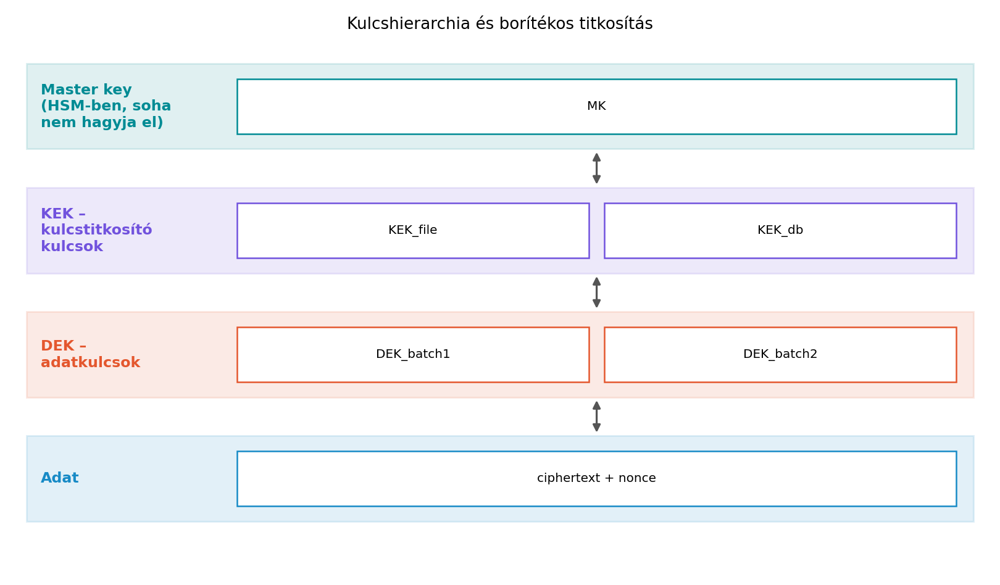

Egy átlagos webshop ma egyszerre kezeli a TLS-tanúsítvány magánkulcsát, a Stripe API-kulcsot, a PostgreSQL-jelszót, a felhős tárfiók hozzáférési kulcsát, és adott esetben az ügyféladatok titkosításához használt adatkulcsot. Ha ezek közül bármelyik nyilvános repóba kerül, a támadók automatizált botjai percen belül megtalálják és kihasználják. A kulcskezelés azonban nem csupán arról szól, hogy „generálj hosszú véletlen kulcsot”: meg kell tervezni, hol él a kulcs, milyen védelmet kap, milyen hosszan használható, ki fér hozzá, és mi történik, ha kompromittálódik. Ebben az alfejezetben rendszerbe foglaljuk a kulcsok életciklusát (generálás, tárolás, használat, rotáció, megsemmisítés), a kriptoperiódus fogalmát, a kulcshierarchiát, a borítékos titkosítást, valamint a hardveres biztonsági modulok (HSM-ek), biztonságos elemek és felhős kulcskezelő szolgáltatások (KMS-ek) szerepét. A cél, hogy egy alkalmazáshoz önállóan össze tudjuk állítani a saját kulcskezelési ellenőrzőlistánkat.
A jó kulcskezelés alapja, hogy a kulcsokat rétegekbe rendezzük. A legfelső szintű kulcs (master key) nem titkosít közvetlenül adatot, csak az alatta lévő kulcstitkosító kulcsokat (KEK) védi. A KEK-ek sem adatra valók, hanem az adatkulcsok (DEK) becsomagolására. Az adatot végül a DEK-kel titkosítjuk, és a DEK-et a KEK-kel burkoljuk be. Ez a borítékos titkosítás (envelope encryption) szerkezete, amely a következő ábrán látható.

A lényeg: ha egy DEK kiszivárog, csak az adott adatkör kerül veszélybe; ha egy KEK szivárog, az az összes általa védett DEK-et leleplezi, ezért a KEK-et és a master key-t lényegesen erősebb védelemben kell tartani. A master key pedig csak annyit csinál, hogy KEK-eket burkol, így maga az érzékeny adat-titkosítási művelet nem igényli a HSM-et, csak a kis kulcs becsomagolása.
Definíció (kulcshierarchia). Kulcsoknak olyan rétegzett elrendezése, amelyben a magasabb szintű kulcsok kizárólag alacsonyabb szintű kulcsok védelmére szolgálnak, és soha nem titkosítanak közvetlenül alkalmazási adatot. A tipikus háromszintű felosztás:
Definíció (borítékos titkosítás). Olyan hibrid szerkezet, amelyben az adatot egy friss, véletlen DEK-kel, szimmetrikus AEAD-sémával titkosítjuk, majd a DEK-et egy KEK-kel (vagy master key-vel) egy kulcsburkoló mechanizmussal (például AES Key Wrap) védjük; a rejtett szöveg mellett a becsomagolt DEK-et (wrapped DEK) és a nonce-ot is tároljuk. Visszafejtéskor először a KEK-kel kibontjuk a DEK-et, majd a DEK-kel visszafejtjük az adatot.
Definíció (kriptoperiódus). Az az időtartam vagy használati mennyiség, ameddig egy adott kulcsot rendeltetésszerűen használják egy meghatározott kriptográfiai célra, mielőtt rotálják vagy megsemmisítik. Egy kulcs kriptoperiódusának két része van: a kibocsátói használati periódus (originator-usage period: amíg titkosítunk vagy aláírunk vele) és a címzetti használati periódus (recipient-usage period: amíg a vele védett adatok visszafejtéséhez vagy ellenőrzéséhez szükség van). A kulcs megsemmisítését e periódusok lejárta után külön ütemezzük.
Definíció (HSM, TPM, biztonságos elem). A HSM (Hardware Security Module) dedikált, illetéktelen beavatkozás ellen védett hardvereszköz, amely kulcsgenerálást, kulcstárolást és kriptográfiai műveleteket végez úgy, hogy a magánkulcs soha nem hagyja el az eszközt. A TPM (Trusted Platform Module) egy platformhoz kötött biztonságos chip, amely hasonló célú, de elsősorban a rendszer integritását és a helyi kulcsok védelmét szolgálja. A biztonságos elem (secure element) kifejezést bankkártyákban, SIM-kártyákban és elektronikus személyi okmányokban használt hasonlóan védett, általában kisebb erőforrású chipre szokták használni.
Definíció (felhős KMS). Menedzselt kulcskezelő szolgáltatás, amely API-n keresztül biztosít kulcsgenerálást, kulcstárolást, kulcsverziózást, burkolást, auditnaplót és hozzáférés-szabályozást. A kulcsok fizikailag gyakran HSM-ben vagy azzal egyenértékű védett környezetben élnek, azonban a KMS a kulcsok életciklusát szoftveresen, a fejlesztő számára könnyen használható módon kezeli.
Példa 1: borítékos titkosítás egy e-kereskedelmi
rendszerben.
Tegyük fel, hogy a rendszer napi rendelésállományait titkosítja. A
fejlesztőcsapat a következő hierarchiát állítja fel:
A napi mentés folyamata:
DEK = secrets.token_bytes(32) — 256 bites véletlen
DEK.nonce = secrets.token_bytes(12);
ciphertext = AESGCM(DEK).encrypt(nonce, rendelesek, None) —
az adat titkosítása a DEK-kel; a kimenet a rejtett szöveg és a 16 bájtos
hitelesítő címke összefűzése.wrapped_DEK = aes_key_wrap(KEK, DEK) — a DEK
becsomagolása a KEK-kel, például AES Key Wrap segítségével (KMS esetén
ezt a KMS burkoló API-ja végzi; a 27.4.7 kódja a lokális, oktatási
változatot mutatja) (lásd Nonce-visszaélés-ellenállás és kulcshasználati
korlátok).(wrapped_DEK, nonce, ciphertext)
hármast.Visszafejtéskor az alkalmazás a becsomagolt DEK-et elküldi a KMS-nek (vagy a HSM-nek), amely a KEK-kel kibontja és visszaadja a DEK-et; a KEK közben nem hagyja el a KMS-t. Ezután az alkalmazás a DEK-kel visszafejti az adatot. A KEK csak a kis, 32 bájtos DEK-et védi, így a HSM/KMS terhelése elhanyagolható a több gigabájtos adat titkosításához képest.
Az alábbi szekvenciadiagram a futásidejű adatutat mutatja KMS-szel: a hálózaton csak a 32 bájtos DEK és a 40 bájtos becsomagolt DEK utazik, az adat titkosítása helyben történik, és a KEK egyik lépésben sem hagyja el a KMS-t (visszafejtéskor az alkalmazás a becsomagolt DEK-et küldi el kibontásra).
Példa 2: kriptoperiódus és rotáció egy aláíró
kulcsnál.
Egy szoftverfrissítő szolgáltatás a kiadott csomagokat
Ed25519-aláírással hitelesíti. A biztonsági szabályzat szerint az aláíró
kulcs kriptoperiódusa 90 nap. A 91. napon a rendszer:
new_sk, new_pk).Ez a példa rávilágít arra, hogy a magánkulcs kibocsátói használati periódusa rövidebb lehet, mint a címzetti (ellenőrzési) periódus, és a megsemmisítést is külön kell ütemezni.
A borítékos titkosítás helyessége közvetlenül következik a komponensek helyességéből:
feltéve, hogy a kulcsburkolás és az AEAD visszafejtés helyes, és a használt nonce a DEK-kel csak egyszer fordul elő.
A biztonsági érvelés szintén rétegenként halad. Ha az AEAD-séma IND-CPA és INT-CTXT biztonságos (lásd Szemantikai biztonság és IND-CPA és Titkosítás és MAC kompozíciója: encrypt-then-MAC), és a kulcsburkoló mechanizmus determinisztikus, hitelesített titkosítás (például AES Key Wrap, RFC 3394), akkor:
Fontos azonban kimondani: a borítékos titkosítás önmagában nem csökkenti a titkossági biztonságot, de nem is növeli azt; a valódi előnye a kulcskezelés skálázhatósága. A DEK-ek rövid életciklusa azt jelenti, hogy egy feltört DEK legfeljebb az adott adatkörre hat; a KEK-ek ritkább cseréje pedig csökkenti az üzemeltetési terhet, de növeli a KEK kompromittálódásának kockázatát. A kriptoperiódust ezért mindig a kulcs szerepe, a várható támadási felület és a szabályozói elvárások alapján kell meghatározni.
A kulcselkülönítéshez a Kulcsszármaztatás:
HKDF gépet használjuk: ugyanabból a véletlen anyagból különböző
info mezőkkel különálló kulcsokat származtathatunk, például
KEK = HKDF(master_secret, info="file_store_kek") és
MAC_key = HKDF(master_secret, info="file_store_mac"). Ez
megakadályozza, hogy egy kulcsot több célra használjunk, ami az egyik
leggyakoribb tervezési hiba.
A leggyakoribb és leginkább tanulságos kulcskezelési eset az, amikor
fejlesztők véletlenül nyilvános kódtárba commitolnak éles kulcsokat: AWS
hozzáférési kulcsot, Stripe secret key-t, SSH magánkulcsot,
adatbázis-jelszót vagy akár TLS-tanúsítvány magánkulcsát. A támadók
folyamatosan pásztázzák a nyilvános repókat, automatizált kódot
futtatnak, amely ismert mintákat (például AKIA...,
sk_live_..., BEGIN RSA PRIVATE KEY) keres.
Amint találnak egy érvényes kulcsot, perceken belül szervert indítanak
kriptovaluta-bányászatra, adatot töltenek le, vagy további
szolgáltatásokhoz próbálnak hozzáférni. A valós esetekből levonható
tanulság, hogy a kulcsot azonnal kompromittáltnak kell tekinteni, nem
elég a commit törlése, mert a kódtár előzménye megőrzi.
A megelőzés háromszintű:
Egy konkrét, tanulságos eset: egy nyílt forráskódú projektben véletlenül egy AWS secret access key került a repóba. A bot perceken belül több száz dollárnyi GPU-használatot generált kriptovaluta-bányászattal, mielőtt a fejlesztők észrevették volna. A kulcsot azonnal rotálni kellett, és a felhőszolgáltató automatikus riasztása mentette meg őket a nagyobb kártól. (Az eset pontos adatai ellenőrzést igényelnek, de a mintázat gyakori.)
cryptography csomaggalAz alábbi oktatási kód a borítékos titkosítás lépéseit mutatja be. A kulcsok és a nonce véletlenek; a reprodukálhatóság kedvéért csak ellenőrizhető tulajdonságokat írunk ki, nem rögzítünk tesztvektort.
# OKTATÁSI CÉLRA – NEM ÉLES HASZNÁLATRA
import secrets
from cryptography.hazmat.primitives.ciphers.aead import AESGCM
from cryptography.hazmat.primitives.keywrap import aes_key_wrap, aes_key_unwrap
# Kulcsok: DEK, KEK, nonce
dek = secrets.token_bytes(32) # 256 bites adatkulcs
kek = secrets.token_bytes(32) # 256 bites kulcstitkosító kulcs
nonce = secrets.token_bytes(12) # 96 bites nonce az AES-GCM-hez
# Tegyük fel, hogy ez a titkosítandó adat
plaintext = b"vasarlasi_rendeles_2025-03-21"
# 1. Adat titkosítása a DEK-kel
ciphertext = AESGCM(dek).encrypt(nonce, plaintext, None)
# 2. DEK becsomagolása a KEK-kel (kulcsburkolás)
wrapped_dek = aes_key_wrap(kek, dek)
# 3. Visszafejtési oldal
unwrapped_dek = aes_key_unwrap(kek, wrapped_dek)
recovered = AESGCM(unwrapped_dek).decrypt(nonce, ciphertext, None)
print("DEK hossza:", len(dek))
print("wrapped DEK hossza:", len(wrapped_dek))
print("visszafejtett adat:", recovered)
print("sikeres visszafejtés:", recovered == plaintext)Várt kimenet (a konkrét bájtok a véletlen kulcsok miatt eltérhetnek,
de a hosszak és a True ellenőrizhetők):
DEK hossza: 32
wrapped DEK hossza: 40
visszafejtett adat: b'vasarlasi_rendeles_2025-03-21'
sikeres visszafejtés: TrueA példa értelmezése: a DEK 32 bájt (256 bit), a KEK szintén 32 bájt, a nonce 12 bájt. Az AES Key Wrap a 32 bájtos DEK-ből 40 bájtos becsomagolt kulcsot készít (8 bájt integritásvédő blokk adódik hozzá). A visszafejtéshez ugyanazzal a KEK-kel kibontjuk a DEK-et, majd a DEK-kel visszafejtjük az adatot. Ez a minta az iparági gyakorlat.
Recept (Kulcskezelési ellenőrzőlista).
info mezőkkel állítsunk elő
különböző kulcsokat; soha ne használjunk egy kulcsot több célra.destroy/schedule deletion műveletet,
szoftveres kulcsoknál biztonságos memóriatörlést használjunk.api_key = "sk_live_..." bekerül a verziókezelőbe. A helyes
megoldás titokkezelő használata, és a környezeti változó is legfeljebb
ideiglenes, nem a repo része.Továbbvitt eredmény. A kulcshierarchia és a borítékos titkosítás szerkezetét használjuk az 1. projekt: fájltitkosító eszköz AEAD-dal és jelszóból származtatott kulccsal záróprojektben, ahol a jelszóból származtatott kulcs KEK-ként védi a fájlok DEK-jeit. A kulcskezelési ellenőrzőlista a Könyvtárválasztás, auditálás, tesztvektorok és fuzzing alfejezetben segít a kriptográfiai kód üzemeltetésében, a hosszú életciklusú kulcsok és a rotáció hiánya pedig a „Gyűjtsd most, fejtsd vissza később” és a posztkvantum-migráció alfejezetben a posztkvantum-migráció kulcskérdése.
1. feladat (A) – Definíciók és fogalmi
megkülönböztetés
Magyarázd el saját szavaiddal a master key, a KEK és a DEK szerepét egy
háromszintű kulcshierarchiában! Adj egy valós példát mindegyikre.
2. feladat (A) – Kriptoperiódus számítása
Egy DEK-et kulcsonként legfeljebb
üzenet AEAD-titkosítására használhatunk. Ha az alkalmazás
másodpercenként átlagosan 1000 üzenetet titkosít, hány napig
használhatjuk ugyanazt a DEK-et? (A biztonsági korlátot lásd Nonce-visszaélés-ellenállás és kulcshasználati
korlátok.)
3. feladat (B) – Kulcshierarchia tervezése
Tervezz kulcshierarchiát egy fájltároló alkalmazáshoz, ahol minden
felhasználónak több fájlja van, és van egy központi, a szolgáltató által
menedzselt főkulcs! Határozd meg, melyik kulcs milyen szinten áll, és
mikor milyen műveletre használod!
4. feladat (B) – Python elemzés
Az alábbi kódrészletben mi a hiba?
import random
dek = random.getrandbits(256).to_bytes(32, "big")Hogyan javítanád? (A helyes gyakorlat: secrets vagy
os.urandom.)
5. feladat (C) – Biztonsági érvelés
Bizonyítsd be szavakkal, hogy ha az AEAD-séma IND-CPA biztonságos, és a
kulcsburkolás biztonságos determinisztikus hitelesített titkosítás
(titkosságot és integritást ad), akkor a borítékos titkosítás IND-CPA
biztonságos! (Formális redukció nem szükséges, de a komponensek
tulajdonságait pontosan használd.)
6. feladat (D) – Játékimplementáció feltörése
Egy alkalmazás a DEK-et plaintextben tárolja az adatbázisban, a rejtett
szöveg mellett. A támadó SQL injection segítségével hozzáfér a táblához.
Írd le lépésről lépésre, mit tud a támadó, és hogyan terveznéd át a
rendszert borítékos titkosítással, hogy a támadó az adatbázis-lopás
ellenére ne férjen hozzá a plaintext adatokhoz!
1. feladat
A master key (MK) a hierarchia gyökere, soha nem adatra használják, csak
KEK-eket burkol; például egy HSM-ben tárolt főkulcs. A KEK (key
encryption key) kulcsokat, jellemzően DEK-eket burkol; például havi
rotációjú kulcs a KMS-ben. A DEK (data encryption key) tényleges adatot
titkosít; például napi mentések titkosításához használt 256 bites
kulcs.
2. feladat
A használható üzenetszám:
.
A sebesség 1000 üzenet/másodperc, így a maximális időtartam
másodpercekben
s. Napokban:
nap. Tehát 49–50 nap után rotálni kell, de a gyakorlatban érdemes ennél
gyakrabban, például naponta.
3. feladat
A hierarchiát a következőképpen tervezhetjük: központi MK (HSM-ben)
burkolja a felhasználónkénti KEK-eket. Minden felhasználónak van egy
KEK-je, amelyet a MK-ból származtatunk HKDF-fel
(info="user_kek"). A felhasználó fájljait fájlonként vagy
munkamenetenként generált DEK-ekkel titkosítjuk; a DEK-eket a
felhasználó KEK-jével burkoljuk, és a wrapped DEK-eket a fájl
metaadataiban tároljuk. A DEK-eket csak a felhasználó KEK-jével lehet
kibontani, és a KEK maga is védett.
4. feladat
A random modul nem kriptográfiai véletlen; a
getrandbits kimenete megjósolható. A helyes megoldás:
import secrets; dek = secrets.token_bytes(32) vagy
import os; dek = os.urandom(32).
5. feladat
Az IND-CPA játékban a támadó két üzenetet küld, és meg kell mondania,
melyiket rejtettük el. A borítékos séma rejtett szövege
(wrapped_DEK, nonce, ciphertext). Mivel a DEK véletlen, és
az AEAD-séma IND-CPA biztonságos, a ciphertext nem árul el
semmit a DEK ismerete nélkül. Hibrid érvelés két lépésben. H0: a valódi
séma. H1: a wrapped_DEK helyett egy független, véletlen
DEK* burkolását adjuk ki; H0 és H1 különbsége a kulcsburkolás
titkosságát törő támadóra vezethető vissza. H1-ben a
ciphertext olyan DEK-kel készül, amelyről a támadó semmit
sem tud, így az előnye legfeljebb az AEAD IND-CPA előnye. Összesen:
.
6. feladat
A támadó az adatbázis-lopással megkapja a plaintext DEK-et és a rejtett
szöveget; a DEK-kel az összes adatot vissza tudja fejteni. Az új terv:
generálunk egy KEK-et egy KMS-ben (vagy HSM-ben), a DEK-eket a KEK-kel
burkoljuk (wrapped_DEK), és csak a wrapped DEK-et tároljuk
az adatbázisban. A támadó az adatbázis-lopással csak wrapped DEK-hez és
ciphertexthez jut; a KEK-et a KMS API védi, így a DEK kibontása nem
lehetséges. A KMS hozzáférés-szabályozással és naplózassal korlátozza a
KEK használatát. Emellett a DEK-et naponta rotáljuk, így egy esetleges
későbbi DEK-szivárgás csak az aznapi adatokat érinti.
A kulcskezelés a kriptográfia üzemeltetési gerince: hiába erős a rejtjel, ha a kulcs a forráskódban van, vagy soha nem rotálják. A kulcshierarchia (master key, KEK, DEK) szétválasztja a hosszú életű, erősen védett kulcsokat a rövid életű, gyakran cserélt adatkulcsoktól. A borítékos titkosítás az adatot friss DEK-kel titkosítja, a DEK-et pedig KEK-kel burkolja, így a HSM/KMS csak a kis kulcsokkal dolgozik, míg az adat gyors szimmetrikus rejtjelet kap. A kriptoperiódus meghatározza, mennyi ideig használhatunk egy kulcsot; a rotáció és az újratitkosítás a kompromittálódás hatását korlátozza. A HSM, TPM, biztonságos elem és felhős KMS a kulcsok védelmét és auditálhatóságát adják. A gyakorlati kulcskezelési ellenőrzőlista magában foglalja a kulcsleltártól a megsemmisítésig terjedő összes lépést. Továbbvitt eredmények: A kulcshierarchia és a borítékos titkosítás szerkezetét a 1. projekt: fájltitkosító eszköz AEAD-dal és jelszóból származtatott kulccsal záróprojekt alkalmazza; a kulcskezelési ellenőrzőlista a Könyvtárválasztás, auditálás, tesztvektorok és fuzzing alfejezetben segít; a hosszú életciklusú kulcsok rotációjának elmaradása pedig a „Gyűjtsd most, fejtsd vissza később” és a posztkvantum-migráció alfejezetben a posztkvantum-migráció egyik központi kockázata.
cryptography (pyca) dokumentációja – a
AESGCM, aes_key_wrap és
aes_key_unwrap API használata. A pontos API-aláírás és
viselkedés a telepített verziótól függően ellenőrizendő.